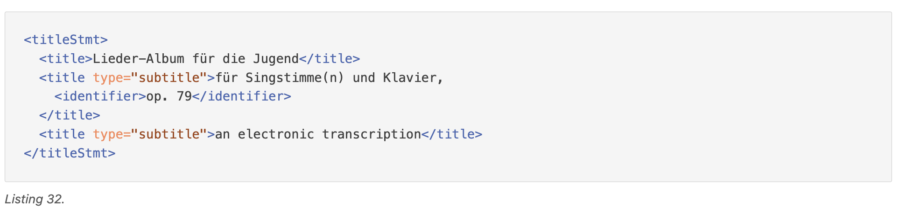
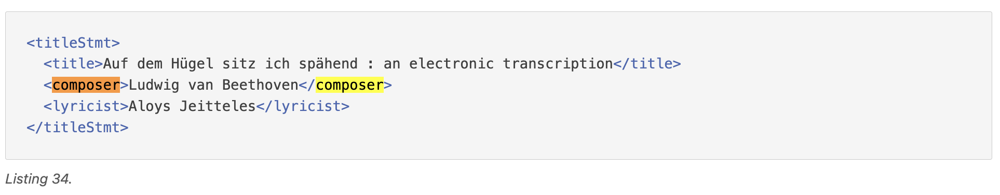
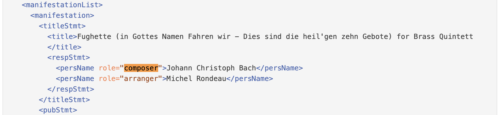
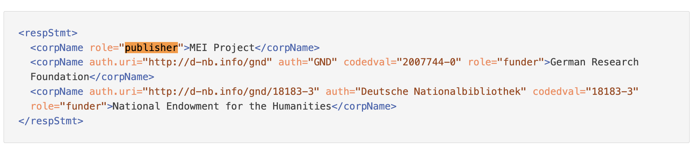
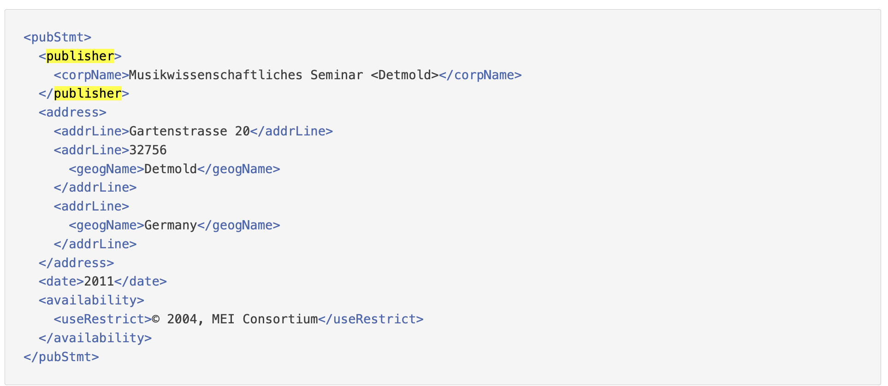
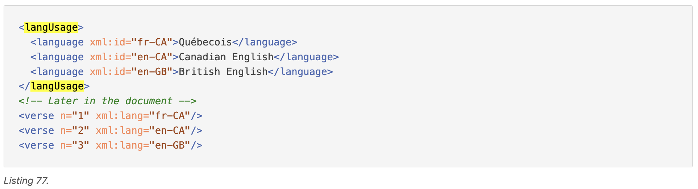
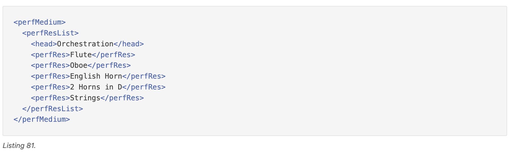
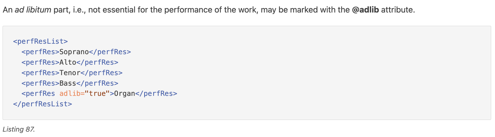

Create a metadata schema of at least 5 elements, including title, artist, publisher, and at least two others of your choice.
Title is defined in the Title Statement.

I chose composer in place of 'artist'. MEI defines this field as 'The name of the creator of the intellectual content of a musical work.' It can be defined:
<persName>, allows adding extra information like the dates of birth and death)

Publisher can be defined:
<pubStmt>

For the fourth element I chose language. Since my dataset's theme is reuse of previously existing music, I decided that information about language/languages might be important information both for researchers and for composers.
In MEI, languages are defined within the <langUsage> element.

The same motivation lies behind my choice of performance medium as a fifth element. This element allows listing instruments/voices needed to perform the piece: 'The perfMedium element provides the possibility of describing a work in terms of its medium of performance; that is, the performing forces required. In the case of a dramatic work, the dramatis personae and associated voice qualities may be enumerated using castList. The perfResList element describes the necessary instrumental and vocal resources.'


Modify your MEI document according to the schema that you have created. Where possible, enrich your data by linking it to existing authorities as discussed in yesterday’s lecture using the @auth.uri attribute.